RescueNet AmbulancePad
Guía interactiva del software de parte asistencial (PCR) de los recursos sanitarios del SUC: desde el inicio de turno hasta la entrega del paciente y el envío del informe.
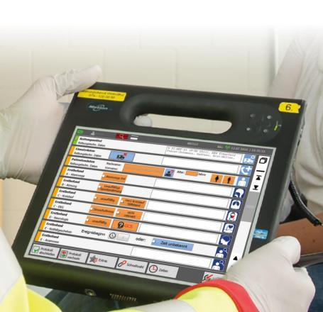
Cómo usar este libro
- Índice (☰ en el móvil): 16 capítulos ordenados según el flujo real de una asistencia.
- Capturas: tócalas para ampliarlas.
- Autoevaluación: cada capítulo termina con preguntas. Al acertarlas todas, el capítulo queda marcado ✓.
- Simulador (cap. 15): una asistencia completa en la que eliges qué hacer en cada paso.
- Examen final y glosario al final del libro.
¿Qué es AmbulancePad?
Es una solución de ZOLL para gestionar en formato digital el parte asistencial del paciente (PCR) durante el transporte sanitario: recoge datos, los documenta, los comunica y permite analizarlos.
Según la oferta, AmbulancePad estaba en uso en 34 instalaciones, con unos 500 clientes instalados en Europa. En Canarias lo implanta Informédica (Informática y Equipamiento Médico de Canarias, S.A.), socio de ZOLL desde 2015.
Qué hace, en una frase por fase
- Recibe la llamada desde la sala (PGE del CECOES 1-1-2) con los datos iniciales del incidente.
- Captura datos clínicos por pulsación táctil, código de barras, código QR o de forma inalámbrica desde desfibriladores ZOLL y respiradores Weinmann.
- Documenta la valoración (ABCDE), el tratamiento y la entrega, con fotos, ECG y escalas.
- Cierra el parte: queda bloqueado, se genera un PDF y se envía un XML al PGE.
- Comparte: email, fax, impresión, PCR compartido con otros recursos y portal web de administración.
Qué incluye el contrato (alcance)
| Componente | Para qué sirve |
|---|---|
| Portal de administración | Configurar usuarios, listas, protocolos y revisar partes |
| CAD Interface | Integración con el PGE del SUC (recepción de llamadas) |
| Licencias cliente | La aplicación en cada tablet |
| Conexión de dispositivos | Todos los desfibriladores ZOLL y respiradores Weinmann, sin límite de equipos |
| Servicios | Parametrización, despliegue, formación y mantenimiento preventivo, correctivo y evolutivo |
Inicio de turno: unidad, tripulación y equipos
Antes de empezar el turno hay que registrar los recursos: vehículo, tripulación y equipos electromédicos. Sin ese paso, la tablet no queda lista para recibir llamadas.
AmbulancePad arranca solo al encender o reiniciar la tablet. Si la tablet se apaga en mitad de un incidente (por suspensión o batería agotada), conserva todo lo grabado hasta ese momento.
- Unidad asignada: servicio, vehículo, base y tipo de protocolo (p. ej., ASVC Medicalizada).
- Tripulación: añade a cada miembro con el botón (+) (rol, n.º de personal o código de barras, cualificación y origen).
- Autenticación: al menos un miembro debe identificarse con contraseña. El sistema muestra en gris los roles obligatorios que faltan, por ejemplo el piloto.
- Dispositivos: selecciona los equipos que se van a conectar (desfibrilador o respirador).
- Lista de verificación (opcional): hasta 4 grupos, por ejemplo estado de la ambulancia o de los equipos. Si marcas algo como no conforme, se abre un cuadro para anotarlo.
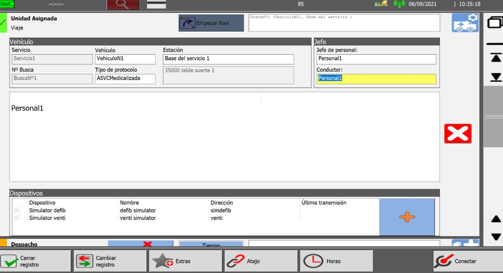
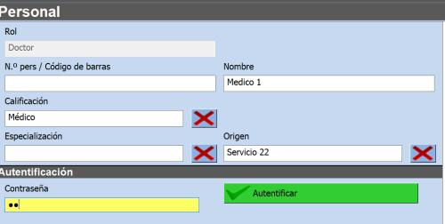
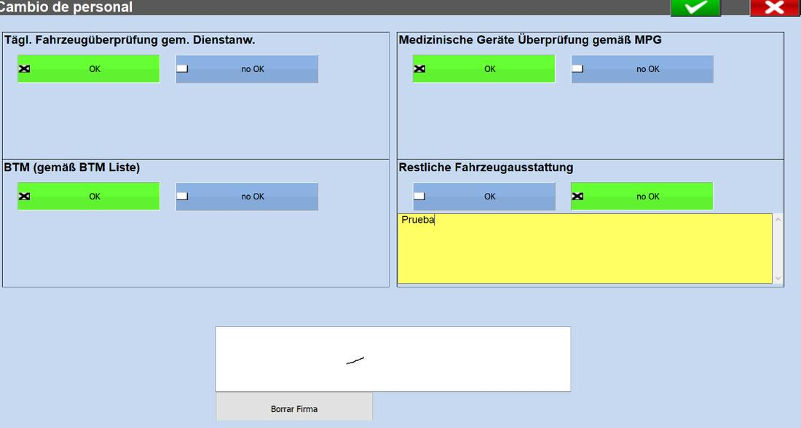
Roles disponibles
MédicoEnfermeroPilotoCopilotoTES conductorTES ayudanteAprendizMecánicoGestor de recursos
La composición obligatoria de cada tipo de recurso se define en el portal. Puedes cambiar rápido de usuario (médico o enfermero en SVA/SVS/AH/AS, TES en SVB) y modificar el protocolo o la tripulación desde la propia tablet, en Unidad asignada.
La interfaz: 4 bloques, colores y semáforo
La pantalla está pensada para rellenar rápido: dos niveles de información, iconos por colores y una barra de estado que indica qué falta.
Los 4 grandes bloques
| Bloque | Contenido | |
|---|---|---|
| 1. Datos de la llamada | Datos administrativos del incidente | |
| 2. Recepción | Estado del paciente al iniciar la asistencia (primera evaluación) | |
| 3. Tratamiento | Acciones realizadas al paciente | |
| 4. Entrega | Estado del paciente al entregarlo en el centro de destino |
Pruébalo: la barra de estado
A la izquierda, cada sección obligatoria lleva una barra naranja si le faltan datos y verde ✓ cuando está completa. Toca las filas para completarlas:
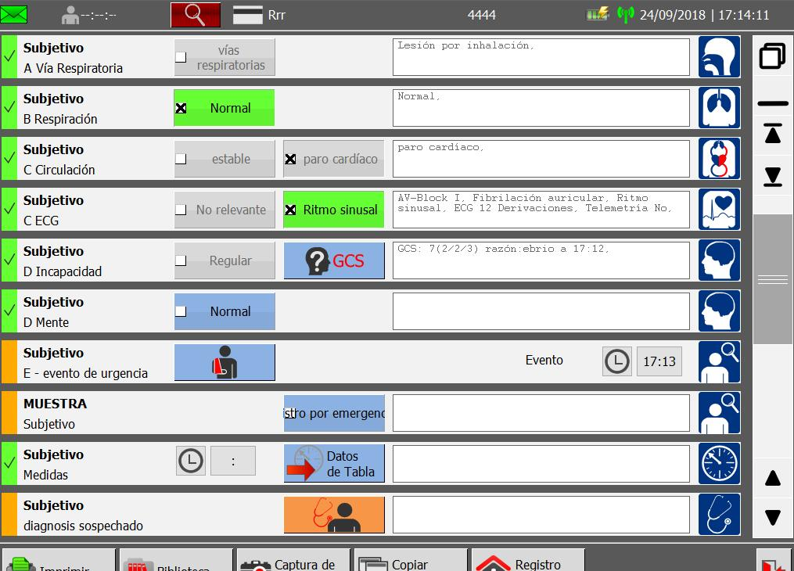
Arquitectura de dos niveles
El primer nivel muestra los campos que más se usan. El segundo nivel se despliega con un toque y contiene el detalle. Así no hay que navegar por menús y submenús y se gana tiempo.
Recepción de la llamada desde la sala
La sala selecciona el recurso en el PGE, que envía la llamada mediante el CAD Interface como archivo XML. La tripulación la acepta en la tablet y los datos se cargan en el parte.
Datos que llegan desde la sala
Filiación del pacienteFecha y hora de asignaciónN.º de incidenteDirección del sucesoSospecha diagnóstica / anamnesis inicialPalabra clave
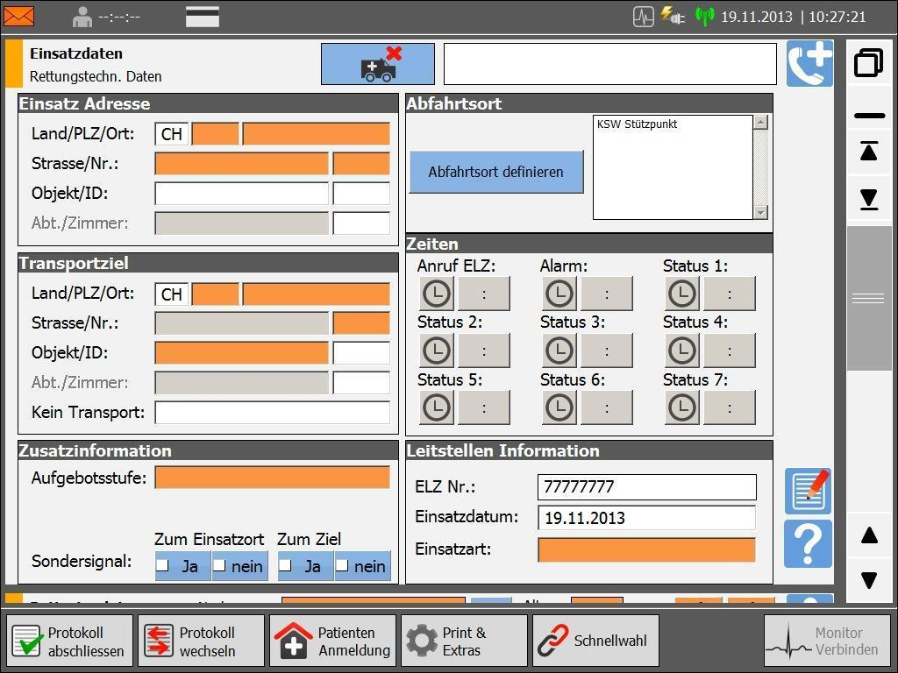
Situaciones habituales
Varios recursos en el mismo incidente
Empiezas una asistencia sin aviso previo de la sala
Faltan datos o no hay cobertura
Varios pacientes a la vez
Palabras clave que actúan solas
El portal puede asociar palabras clave a campos del parte. Por ejemplo, la palabra clave PRIORIDAD 0 marca automáticamente «Conducir con prioritarios», y Emergencia puede activar «conducir con la sirena encendida».
Valoración inicial: esquema ABCDE
Al llegar al lugar empieza la recogida estructurada de datos. Cada cuadro (vía aérea, respiración, circulación…) se despliega con un toque.
| Letra | Sistema | Ejemplos en la app |
|---|---|---|
| A | Vía aérea | Libre o comprometida, intubado |
| B | Respiración | Frecuencia, oxígeno, ventilado |
| C | Circulación / ECG | Ritmo sinusal, STEMI, hemorragia |
| D | Discapacidad neurológica | Consciencia, GCS, pupilas, FAST |
| E | Exposición | Lesiones en el mapa corporal |
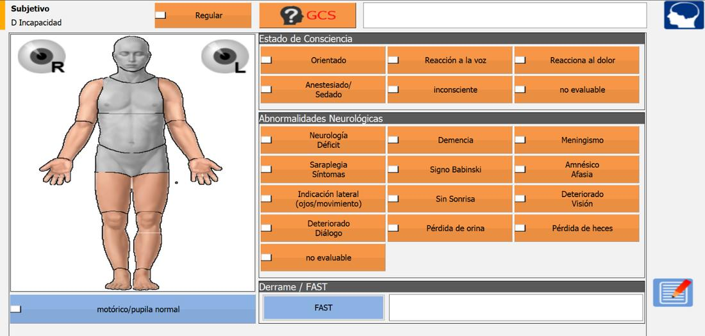
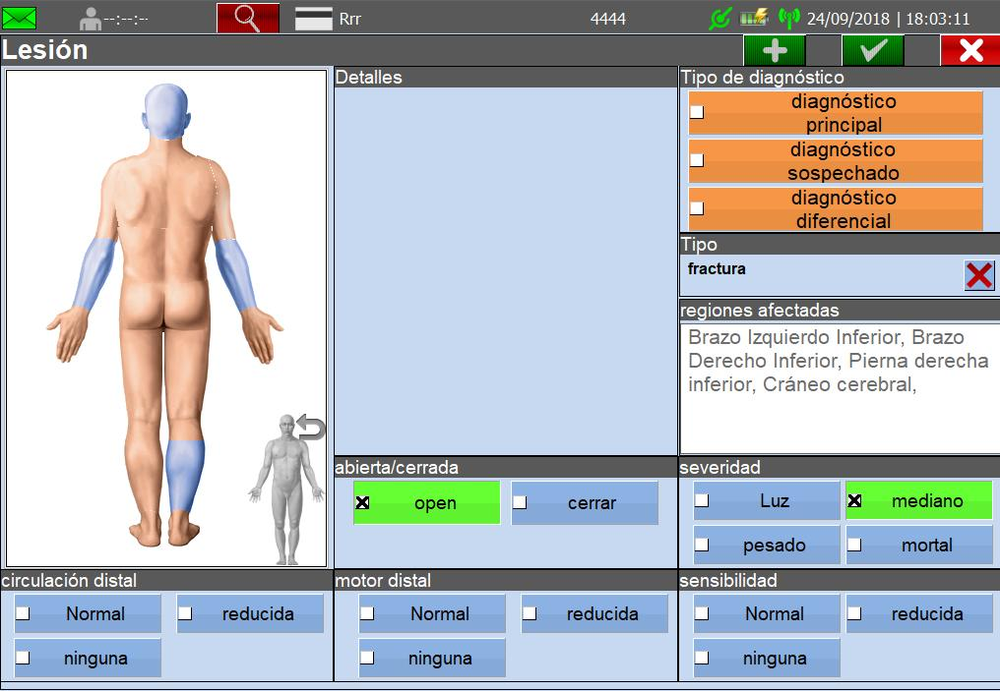
Formas de introducir datos
👆 Pulsación táctil▮▯▮ Código de barras▦ Código QR📶 Inalámbrico (equipos médicos)
Equipos médicos, constantes, ECG y fotos
AmbulancePad recoge por Bluetooth los datos de los desfibriladores ZOLL X Series y de los respiradores Weinmann, y los muestra en una línea de tiempo.
Conectar un equipo
- Pulsa el botón + en Dispositivos.
- Selecciona el equipo en la lista (ZOLL X/E/M Series, Corpuls, Lifepak…).
- Comprueba el indicador de estado junto al nombre: conectado o sin conexión.
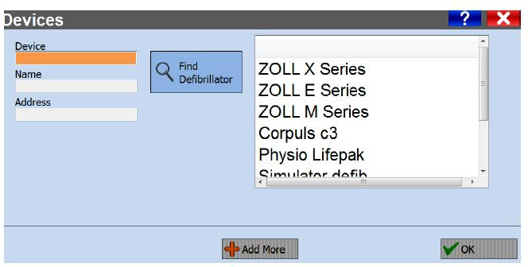
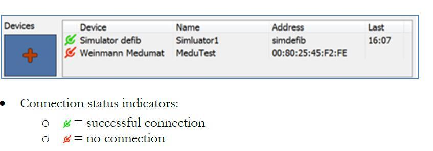
Al conectar el desfibrilador, se transfiere todo lo grabado hasta ese momento y, a partir de ahí, los datos llegan de forma continua hasta que se desconecta.
Tendencias: gráfica o tabla
Con un toque se pasa del modo gráfico al tabular.
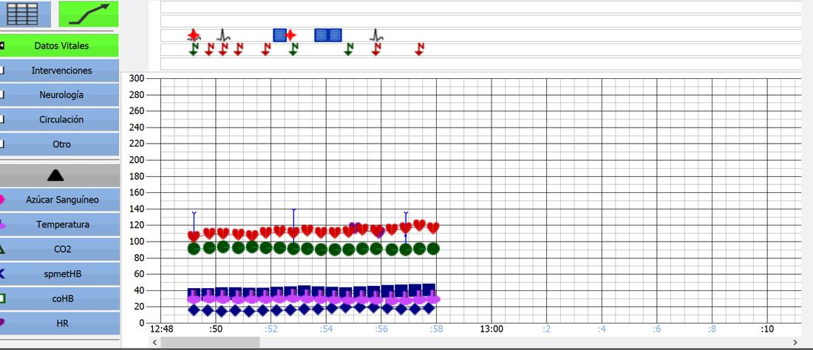
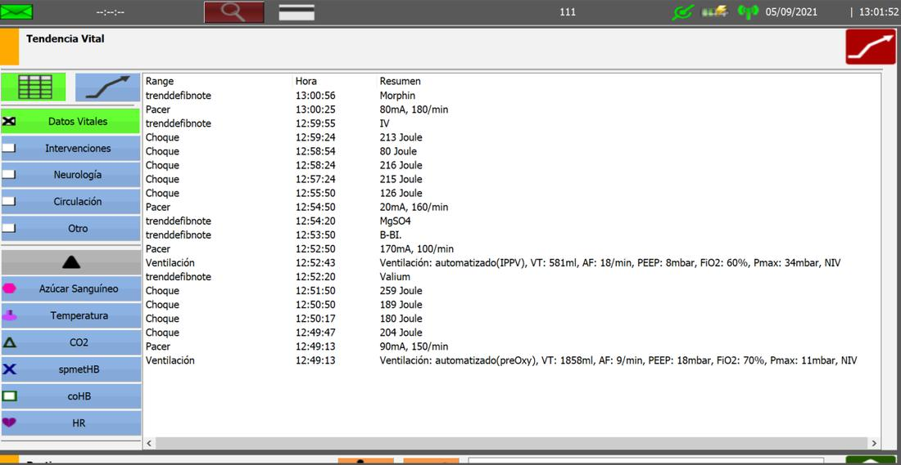
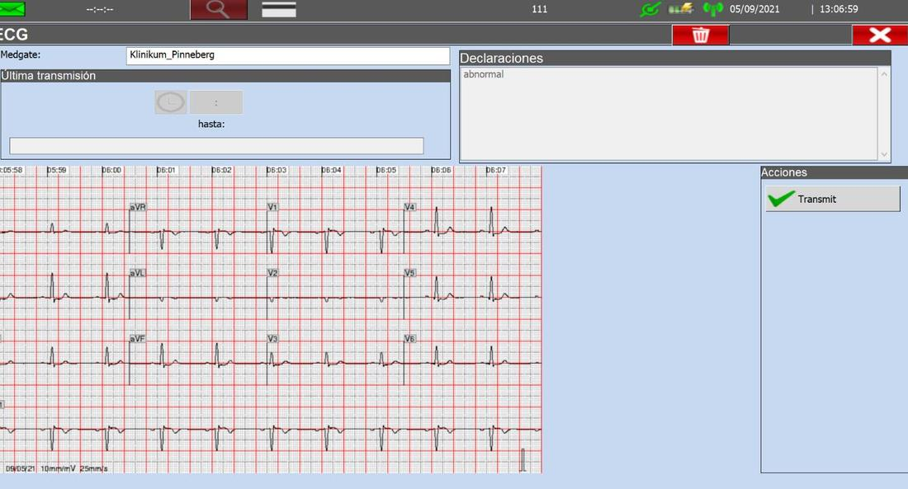
Fotografías
La cámara de la tablet está a un toque. Las fotos se colocan en la línea de tiempo junto a los datos de los equipos, así queda registrado cuándo se tomaron. Se pueden comentar y eliminar, y se incluyen en un apartado del informe.
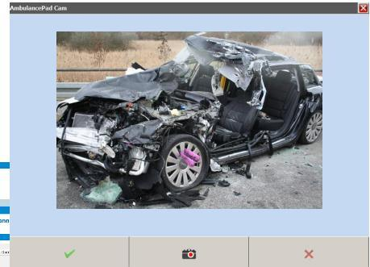
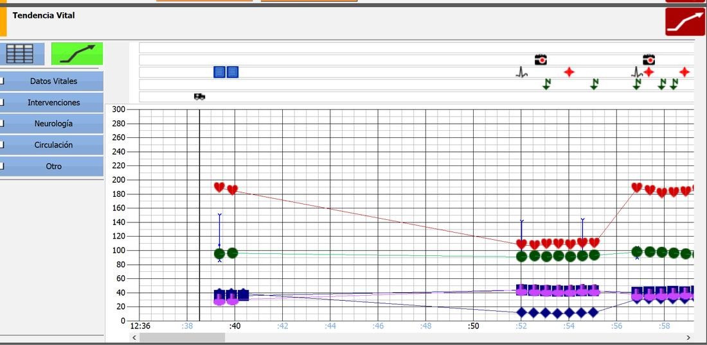
Tratamiento, acciones y tipos de protocolo
En el bloque rojo se documentan la evolución y las intervenciones: vía aérea, oxígeno, accesos, gasometría, medicación, inmovilización…
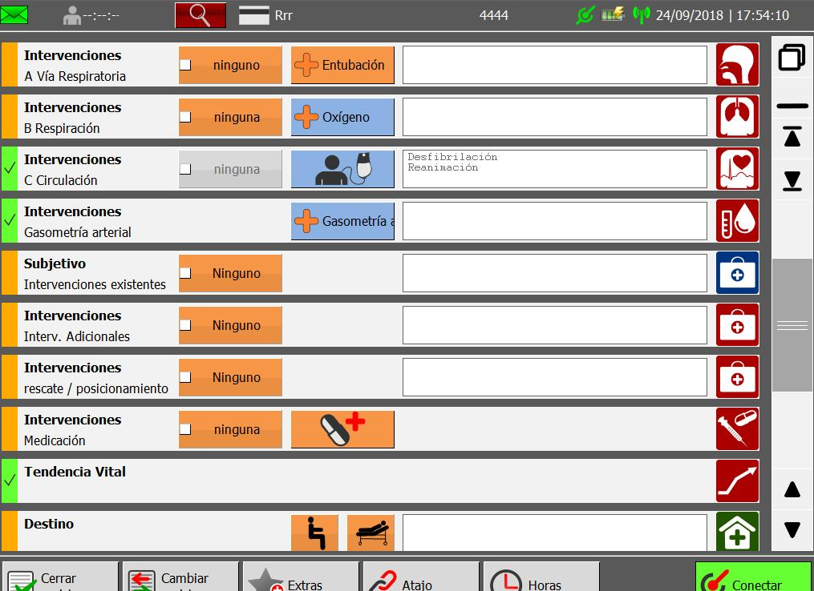
Cambio de protocolo durante el caso
Si el paciente cambia de situación, puedes ampliar el protocolo desde el propio caso, por ejemplo de SVB a SVA. Se conservan todos los datos registrados hasta ese momento.
Técnicas específicas por protocolo
El SUC decide qué técnicas aparecen en cada protocolo. Por ejemplo, una técnica avanzada puede figurar en SVA y no aparecer en SVB.
Escalas y situaciones especiales
Escalas disponibles
| Escala | Uso |
|---|---|
| Glasgow (GCS) | Nivel de consciencia: ocular, verbal y motora |
| Cincinnati (FAST/PRISA) | Sospecha de ictus: cara, brazos, habla y hora de inicio |
| START | Triaje en incidentes con múltiples víctimas |
| APGAR | Valoración del recién nacido |
| NACA | Gravedad del paciente (aparece en las capturas) |
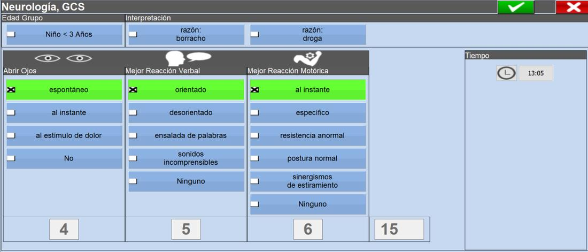
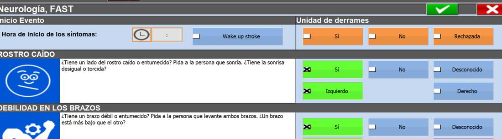
Situaciones especiales documentables
- El paciente se niega a dar datos
- El paciente se niega a recibir asistencia
- El paciente se niega al traslado (documento de rechazo con firmas, en varios idiomas)
- Éxitus (certificado con causa, lugar, hora y firma del médico)
- Autorización del tratamiento por tutor legal (menores o personas incapaces)
- Pacientes menores de edad
- Uso de la fuerza o violencia contra el personal
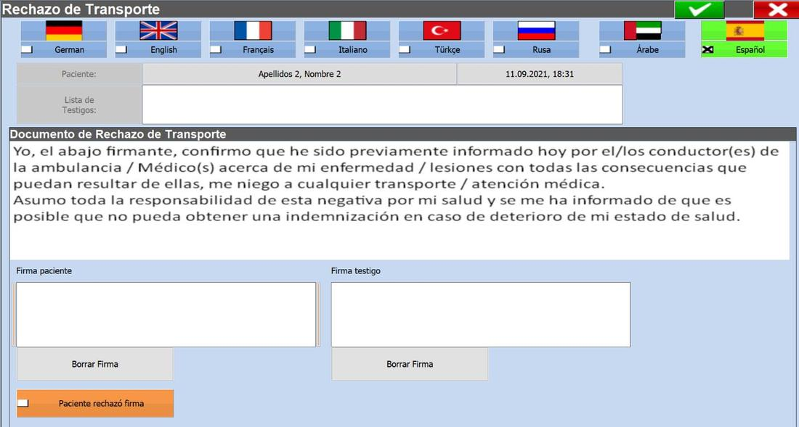
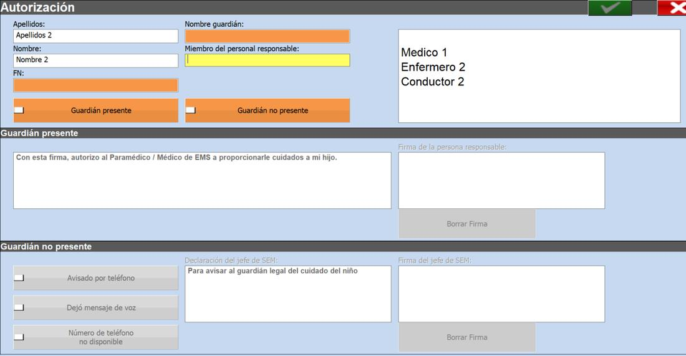
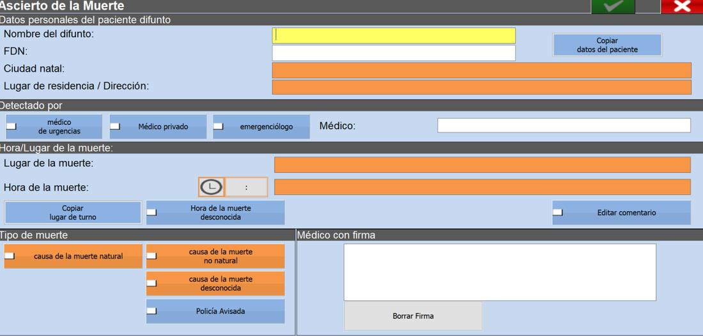
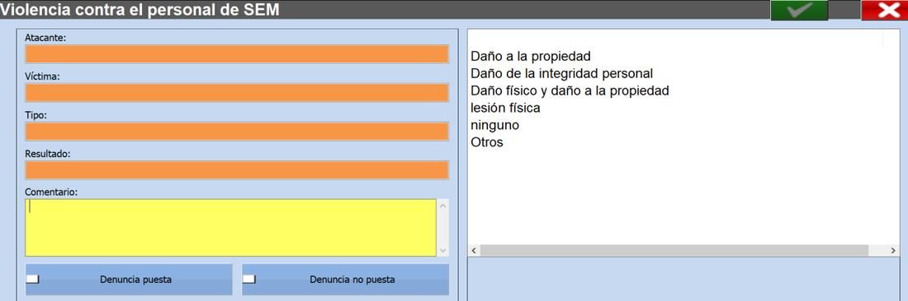
Prenotificación: patologías tiempo-dependientes
Si registras un diagnóstico de sospecha de SCACEST o ACV, el sistema muestra un mensaje parpadeante para que envíes de inmediato la prenotificación a la sala y al hospital receptor.
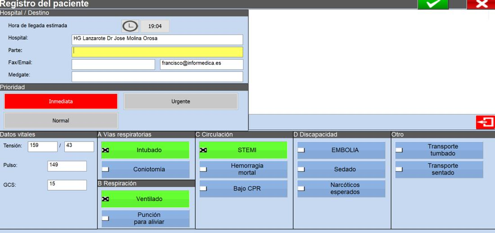
- Introduce la hora estimada de llegada.
- Selecciona el hospital de destino y comprueba el fax o el email, o elige una lista de distribución.
- Marca la prioridad: Inmediata, Urgente o Normal.
- Revisa el estado y las medidas. Las últimas constantes se insertan solas y puedes editarlas.
- El diagnóstico aparece en solo lectura. Envía.
Entrega del paciente y cierre del parte
El bloque verde recoge el estado del paciente al entregarlo. Con «Copiar del registro», los últimos datos (de los equipos o introducidos a mano) se copian en los campos de entrega.
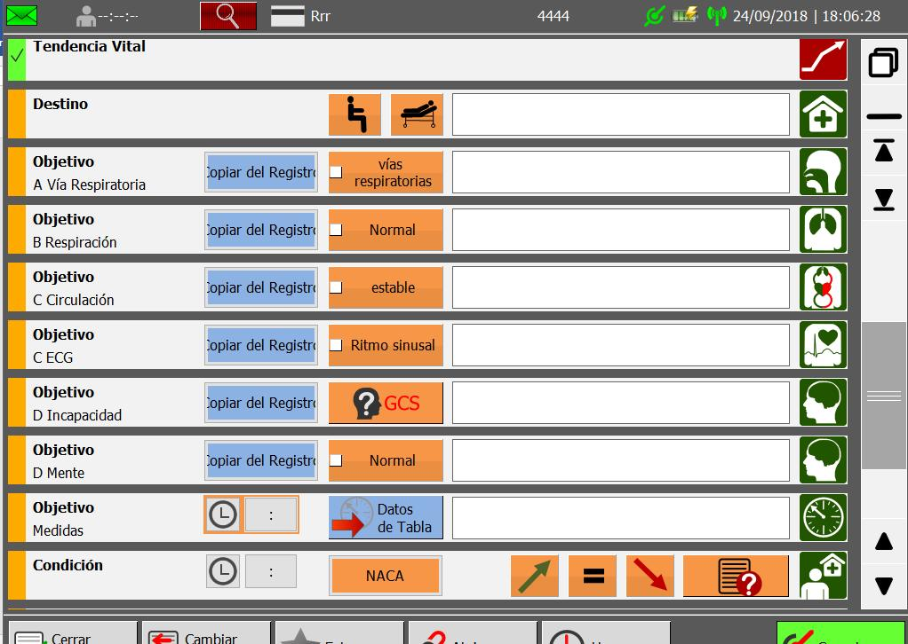
Cierre del PCR
- Comprueba que todas las barras están en verde. Si quedan campos obligatorios abiertos, el sistema te pide justificarlo («no posible», «no relevante», «no requerido», «sin tiempo»).
- Firma y, si está configurado, introduce la contraseña como autenticación adicional.
- El parte queda cerrado y bloqueado: se genera el PDF en el servidor y se envía el XML al PGE.
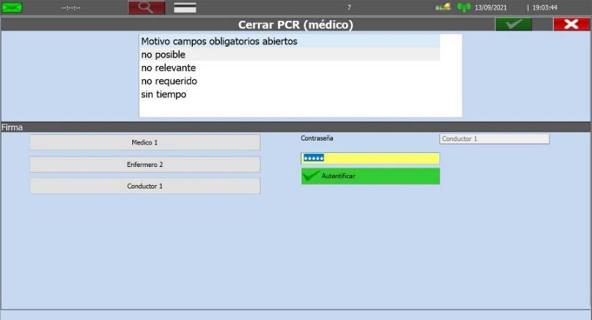
Compartir información con otras tripulaciones
Si se envían varios recursos al mismo paciente, AmbulancePad usa una clave común para que solo los recursos enviados puedan compartir los datos. Esto evita duplicar el registro y solo funciona mediante la interfaz de despacho.
Los recursos A y B atienden al mismo paciente y cada uno crea su PCR. A traslada al paciente y necesita imprimir los dos.
① A cierra su PCR → Imprimir → Compartir.
② B toca la lupa y ve la lista de PCR relacionados disponibles para imprimir.
Informe, impresión y envío
El informe en PDF lleva el formato corporativo del GSC-SUC e incluye solo los campos rellenados. Durante la asistencia puedes enviar en cualquier momento un informe preliminar, con ECG si quieres.
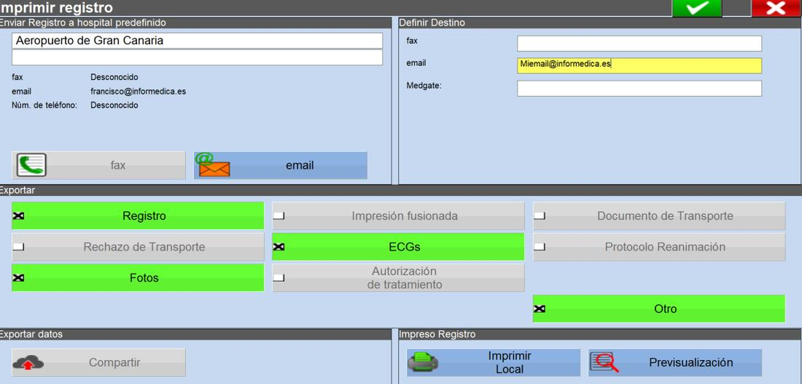
| Opción | Qué hace |
|---|---|
| Hospital predefinido | Usa el fax o email configurado para el destino. Al elegir la vía se activa OK. |
| Definir destino | Fax o email introducido a mano |
| Exportar | Elige qué incluir: Registro, ECG, Fotos, Rechazo de transporte, Autorización… |
| Compartir | Comparte el PCR con otros recursos autorizados |
| Impresión local | Impresora del vehículo |
| Vista previa | Muestra el documento en pantalla |
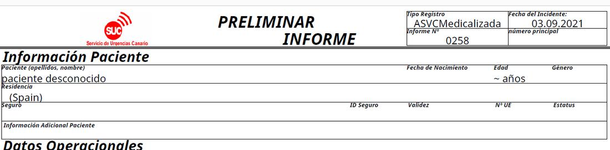
- Email: integrable con Office 365. Se puede enviar al paciente (o a sus padres o tutor) y a las Fuerzas y Cuerpos de Seguridad cuando sea necesario.
- XML: la exportación se hace desde el portal de administración, no desde la tablet.
- Archivo: el parte cerrado está disponible enseguida en el portal en formato tabla, PDF y XML.
Portal de administración
Es un portal web «zero footprint»: no hay que instalar nada. Los responsables del SUC-GSC tienen permisos de administración y conceden o retiran accesos.
Qué se configura
- Cuentas, roles y permisos
- Política de contraseñas: longitud, mayúsculas, números, caracteres especiales y caducidad
- Auditoría de accesos
- Tipo, identificación y ubicación
- Roles requeridos por tipo de recurso
- Dispositivos médicos que se pueden conectar
- Tipos de protocolo
- Bloques, orden y campos obligatorios
- Técnicas por protocolo
- Palabras clave que activan campos
- Medicamentos y alergias
- Bases, vehículos y organizaciones
- Motivos de anulación y tipos de llamada
- Hasta 5 preguntas personalizadas en la entrega
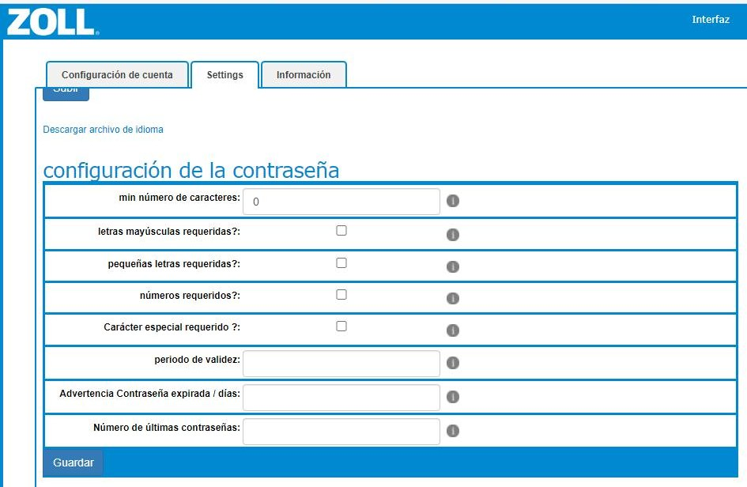
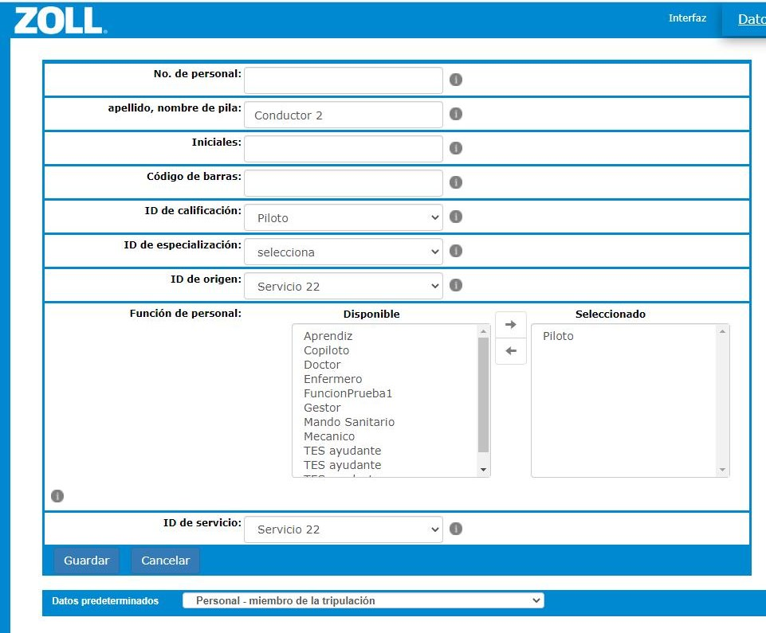
También permite revisar los partes cerrados, devolverlos al usuario para corregirlos y generar informes estadísticos.
Navegadores admitidos en la oferta: Chrome 59, Firefox 53, IE 11, Edge.
Soporte, mantenimiento e implantación
Soporte
- Teléfono de lunes a viernes, de 8:00 a 17:00, además de email y sistema de tickets.
- Los tickets se priorizan por gravedad y urgencia, con un escalado de 3 niveles.
Tipos de mantenimiento
| Tipo | Incluye |
|---|---|
| Preventivo | Todas las actualizaciones de versión del periodo |
| Correctivo | Solución de fallos de funcionamiento |
| Evolutivo | Pequeños cambios de código o de la API para integrarse con las salas del CECOES 1-1-2, sin coste adicional |
Plan de implantación
- Semana 1: entrega de licencias y preparación de la infraestructura
- Semana 2: taller y configuración
- Semana 3: configuración
- Semana 4: formación de superusuarios
La formación sigue un modelo de formador de formadores: se forma a superusuarios de cada empresa prestadora, que después forman a su plantilla. También hay formación continuada.
Simulador: una asistencia completa
Caso: varón de 62 años con dolor torácico. Recurso: SVA medicalizada. Elige la mejor acción en cada paso.
Examen final
15 preguntas sobre todo el libro. Tu resultado aparece al final.
Glosario
- PCR
- Patient Care Record: el parte asistencial digital. No confundir con «parada cardiorrespiratoria».
- PGE
- Sistema de gestión de la sala operativa del CECOES 1-1-2 que envía las llamadas a los recursos.
- CAD / CAD Interface
- Computer-Aided Dispatch. Interfaz estándar de ZOLL que recibe por XML las llamadas del PGE.
- CECOES 1-1-2
- Centro Coordinador de Emergencias y Seguridad de Canarias.
- SUC / GSC
- Servicio de Urgencias Canario / Gestión de Servicios para la Salud y Seguridad en Canarias.
- SVA · SVB · SVS · AH · AS
- Soporte Vital Avanzado, Básico, Sanitarizado, Ambulancia Helitransportada y Ambulancia Sanitarizada (recursos del SUC).
- TES
- Técnico en Emergencias Sanitarias.
- ABCDE
- Esquema de valoración: vía aérea, respiración (Breathing), circulación, discapacidad y exposición.
- GCS · FAST · START · APGAR · NACA
- Escalas de Glasgow, ictus (Cincinnati), triaje de múltiples víctimas, recién nacido y gravedad.
- SCACEST
- Síndrome coronario agudo con elevación del ST.
- LDAP
- Protocolo de directorio para autenticación centralizada de usuarios.
- Zero footprint
- Aplicación web que no requiere instalar nada en el equipo.
- Anexo (anotación al margen)
- Única forma de añadir información a un parte ya cerrado.